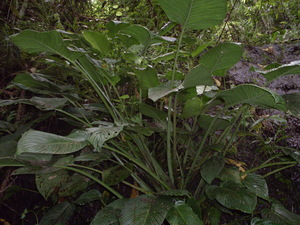
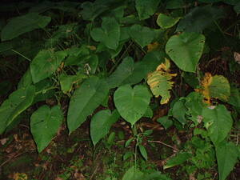

apusew  
/ʔapusɔw/
n.
n.
a vegetable which grows along the river bank
Ka seini ne gulay egpekeg-iling te dewen te suli wey iling en iya seini te suli piru kenè egdehes wey amana ne meilem ka dewen wey bayew maangkag ka me lawwa kayi ne diyè dè egkakita seini te katalunan su egkeenen te palees ka behas kayi ne egngaranan te butù te apesew wey meupiya degma ne egkeenen ka butù kayi.
Migpamupu key te apusew diyè te sampew su eggulayen ney.
We picked vegetable variety at water falls because we are going to cook them.
Cult. like asparagus
Eng. vegetable variety
Online dict status: -
Usage level: RT
Updated by: RJH,RMU,QDL
Last updated: 13/Oct/2009
This page last updated: 03-Jan-2020
Copyright © 2009-2014, Matigsalug Language Christian Association, Inc